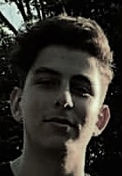

Kerem Yildiz
Mijn naam is Kerem Yildiz. Ik ben 17 jaar oud. Ik heb mijn Mavo+ diploma gehaald. Daarna deed ik de opleiding technicus engineering maar dat vond ik niets. Nu doe ik het opleiding Media- en applicatie ontwikkelaar en ik vind het heel leuk. Mijn hobbys zijn basketballen, fitness. web designen en reizen. Ik speel basketbal bij divine onder 18 en dit is mijn 2de seizoen. Ik ben februari 2018 begonnen met fitness. Jammer genoeg ben ik gestopt maar ik ga er weer aan beginnen. Sinds ik met mijn nieuwe opleiding ben begonnen vind ik het leuk om met computers bezig te zijn. Ik vind ook heel leuk om te reizen naar verschillende steden en landen.